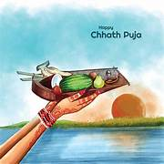
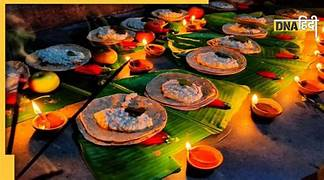
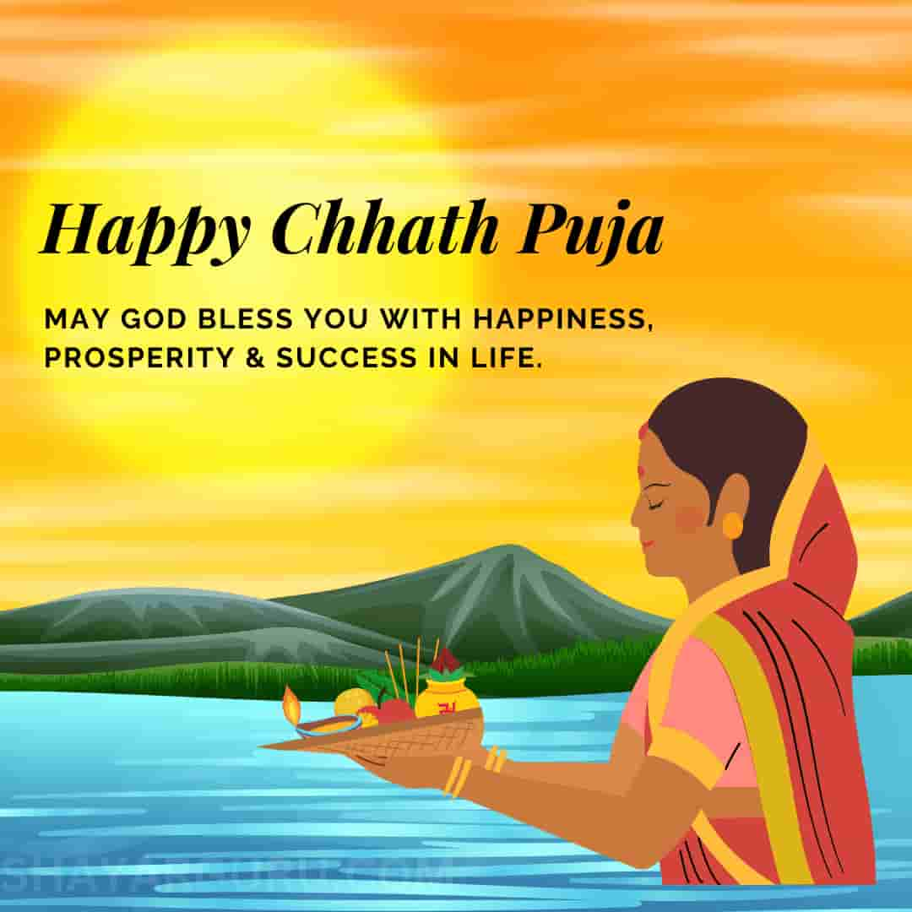
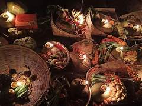

Day1
"Nahay Khay" beginning of Chhath Puja with a ritual bath and the first purified meal, symbolizing spiritual cleansing.

Day2
"Kharna", involve fasting, preparing a special meal and offering prayers to purify the mind and body for puja

CHATH PUJA
Chhath Puja is a significant Hindu festival dedicated to the Sun God, celebrated with rituals of fasting, prayer, and offering arghya to the rising and setting sun.

CHATH PUJA
Chhath Puja is a significant Hindu festival dedicated to the Sun God, celebrated with rituals of fasting, prayer, and offering arghya to the rising and setting sun.